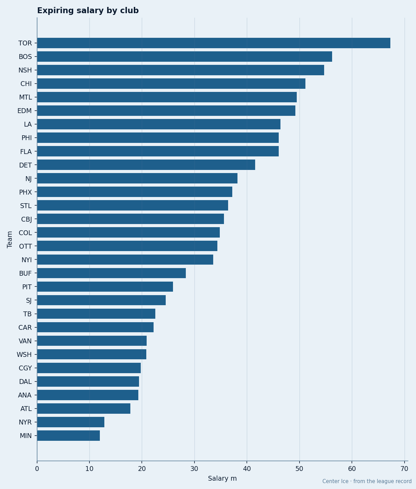
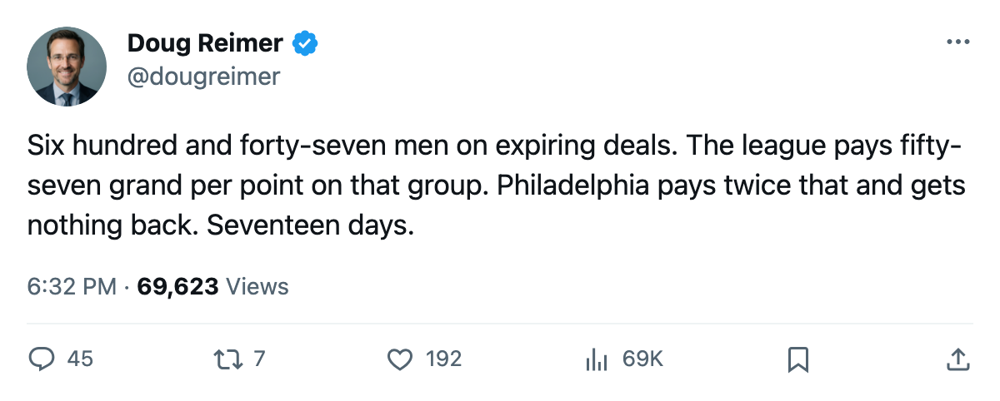
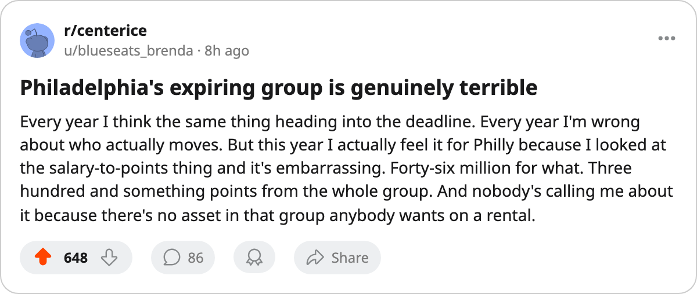

$46.07M, 365 Points: The Expiring-Salary Board With 17 Days Left
Philadelphia carries the 4th-highest expiring payroll in hockey and the worst production attached to it. The league pays $57,460 per point on average to men whose contracts end in June.
 Doug ReimerAnalytics editor, ex-video coach · The Slot Report
Doug ReimerAnalytics editor, ex-video coach · The Slot Report
Seventeen days to what the calendar has as the trade deadline. The Contract Ledger carries every man in the league with one year left on his deal. The desk ran the expiring salary against the points those men have produced this season. The league-wide number is $57,460 per point across 647 expiring skaters who have combined for 15,080 points on $866.50M of salary. Every club sits above or below that number, and the spread tells you which GM is selling a depreciating asset and which one is holding a bargain.

The bottom of the board
 Philadelphia Flyers carries 30 expiring men worth $46.07M. Those 30 have produced 365 points between them. No club with more than $40M coming off in June has fewer points attached to the salary. The club sits 5 points out of the 8th seed in the East with 19 games left. A $46.07M payroll that produces 365 points is a book that only moves if the seller accepts that the buyer is paying for the rental, not the renewal.
Philadelphia Flyers carries 30 expiring men worth $46.07M. Those 30 have produced 365 points between them. No club with more than $40M coming off in June has fewer points attached to the salary. The club sits 5 points out of the 8th seed in the East with 19 games left. A $46.07M payroll that produces 365 points is a book that only moves if the seller accepts that the buyer is paying for the rental, not the renewal.
Philadelphia is not alone in the cellar.  St. Louis Blues carries $36.43M across 17 expiring men for 253 points.
St. Louis Blues carries $36.43M across 17 expiring men for 253 points.  Columbus Blue Jackets has $35.60M and 302 points.
Columbus Blue Jackets has $35.60M and 302 points.  Tampa Bay Lightning brings $22.52M and 146 points.
Tampa Bay Lightning brings $22.52M and 146 points.  Mighty Ducks of Anaheim has $19.31M and 202 points. All five sit in the bottom tier: high salary, low return, no realistic path to a playoff berth that justifies keeping the contracts.
Mighty Ducks of Anaheim has $19.31M and 202 points. All five sit in the bottom tier: high salary, low return, no realistic path to a playoff berth that justifies keeping the contracts.
The top of the board
At the other end,  Atlanta Thrashers carries $17.77M across 19 expiring men who have 602 points between them.
Atlanta Thrashers carries $17.77M across 19 expiring men who have 602 points between them.  Calgary Flames has $19.76M and 583 points.
Calgary Flames has $19.76M and 583 points.  Toronto Maple Leafs carries $67.30M, the most in the league, but 35 men have produced 1,058 points.
Toronto Maple Leafs carries $67.30M, the most in the league, but 35 men have produced 1,058 points.  Edmonton Oilers carries $49.23M across 45 men for 1,062 points. These clubs get more hockey per expiring dollar than the league produces at $57,460 per point.
Edmonton Oilers carries $49.23M across 45 men for 1,062 points. These clubs get more hockey per expiring dollar than the league produces at $57,460 per point.
The tension: the cheapest clubs per point tend to be the ones still alive in the race (Toronto, Dallas, Edmonton, Atlanta). The expensive ones are either already out or about to be. A club that built cheap depth wins more games; a club that overpaid for middle-six men ends up with a payroll it cannot justify in April.
| club | expiring men | salary | points produced |
|---|---|---|---|
| Toronto Maple Leafs | 35 | $67.30M | 1058 |
 Boston Bruins Boston Bruins | 35 | $56.21M | 638 |
 Nashville Predators Nashville Predators | 34 | $54.73M | 800 |
 Chicago Blackhawks Chicago Blackhawks | 26 | $51.17M | 726 |
 Montreal Canadiens Montreal Canadiens | 30 | $49.52M | 827 |
| Edmonton Oilers | 45 | $49.23M | 1062 |
 Los Angeles Kings Los Angeles Kings | 25 | $46.38M | 652 |
| Philadelphia Flyers | 30 | $46.07M | 365 |
 Florida Panthers Florida Panthers | 46 | $46.06M | 552 |
 Detroit Red Wings Detroit Red Wings | 24 | $41.55M | 554 |
| Atlanta Thrashers | 19 | $17.77M | 602 |
| Calgary Flames | 17 | $19.76M | 583 |
The man on the cheapest contract in hockey
 Ilya Kovalchuk86 turns 22 on 2005-04-15. He is on $1.10M with one year left, has 105 points in 62 games, and carries the Development Index at +5 on a base of 89. His overall reads 86 today. His contract-year salary produces points at a rate that no other 100-point player in the league approaches: the next-cheapest man on the board with 100+ points is
Ilya Kovalchuk86 turns 22 on 2005-04-15. He is on $1.10M with one year left, has 105 points in 62 games, and carries the Development Index at +5 on a base of 89. His overall reads 86 today. His contract-year salary produces points at a rate that no other 100-point player in the league approaches: the next-cheapest man on the board with 100+ points is  Marian Gaborik96 at $1.10M with 81 points, and Gaborik has a full season's schedule behind him.
Marian Gaborik96 at $1.10M with 81 points, and Gaborik has a full season's schedule behind him.
Atlanta sits 9th in the East at 64 points, 2 behind the 8th-place club with 20 games left. The franchise has 29 injury spells and 181 days lost on the year, but Kovalchuk has missed nothing. He is 21, healthy, untradeable in the sense that no GM gives up a 105-point man on $1.10M for anything less than a package that rebuilds the room. But the expiring-salary board says the question is being asked. If Atlanta falls out of the 8th-spot race by 2005-03-19, the $1.10M salary becomes a fire-sale problem for whoever has to justify keeping a man who will walk in June.
The Book grades him 98 on speed, 97 on shot power, 90 on deking. The Development Index has him 5 above his base. Morale is 95. He has no injuries this season. Last season he put up 134 points in 82 games. The only question at the deadline is whether the answer is "yes, we'll take that package" or "no, we'll sign him in July."
The names that move
The highest-paid expiring men, from the Bureau's Contract Ledger: a St. Louis defenseman at $9.50M on a club that is out of it.  Jason Allison87 at $6.70M on a club with 58 points and 18 games left.
Jason Allison87 at $6.70M on a club with 58 points and 18 games left.  Ed Belfour92 at $6.50M, 93 overall, on a club with nothing to prove.
Ed Belfour92 at $6.50M, 93 overall, on a club with nothing to prove.  Jose Theodore89 at $5.50M, 85 overall, on a club with 51 points and no path anywhere.
Jose Theodore89 at $5.50M, 85 overall, on a club with 51 points and no path anywhere.
At the other end of the value spectrum, the men the deadline should not touch:  Brad Richards85 at $1.00M for 56 points on the best team in the East.
Brad Richards85 at $1.00M for 56 points on the best team in the East.  Brenden Morrow86 at $1.30M for 63 points on the Presidents' Trophy holder.
Brenden Morrow86 at $1.30M for 63 points on the Presidents' Trophy holder.  Martin St. Louis81 on a $0.56M-per-point club that is already the most efficient room in the league.
Martin St. Louis81 on a $0.56M-per-point club that is already the most efficient room in the league.
The deadline separates clubs into two groups: those whose expiring salary is an asset to be cashed, and those whose expiring salary is an anchor nobody will carry. Philadelphia is in the second group with $46.07M and 365 points. Atlanta is in the first group with $17.77M and 602 points. The league average of $57,460 is the line between them.

